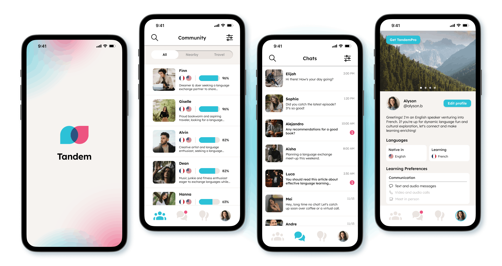
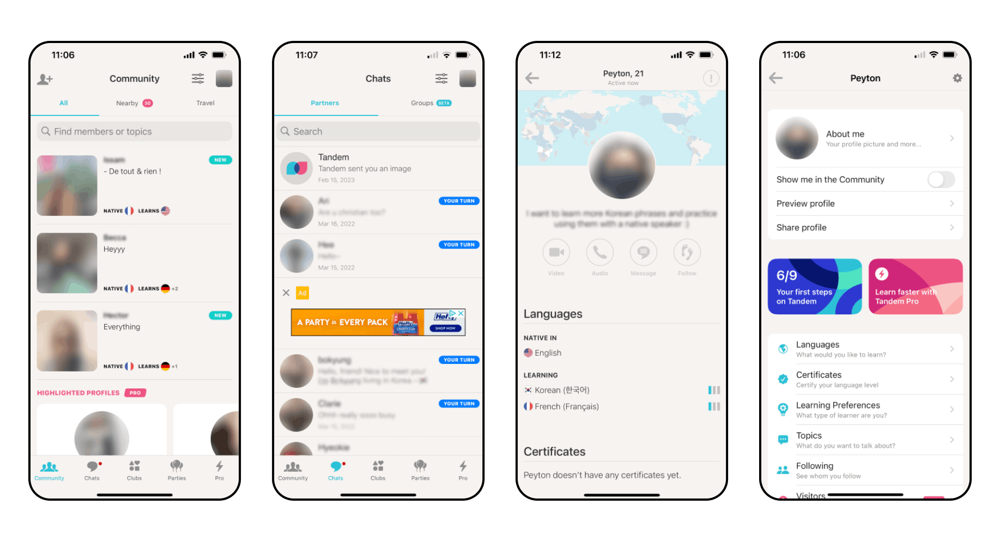
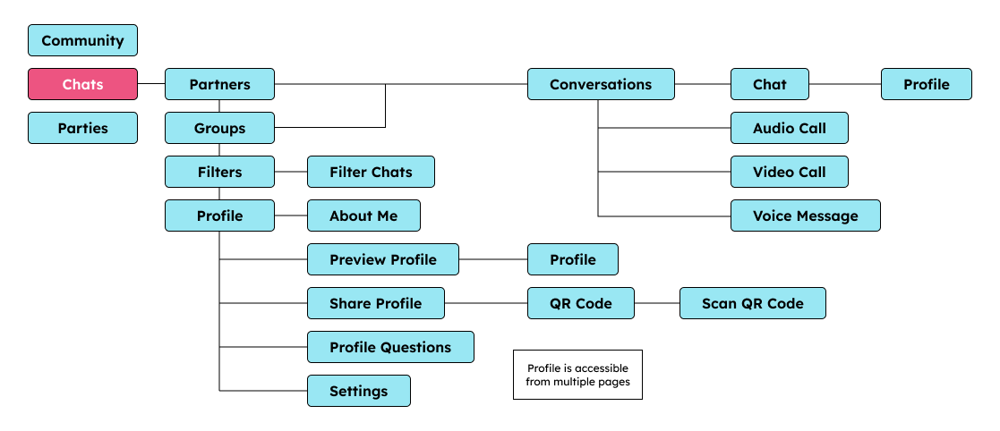
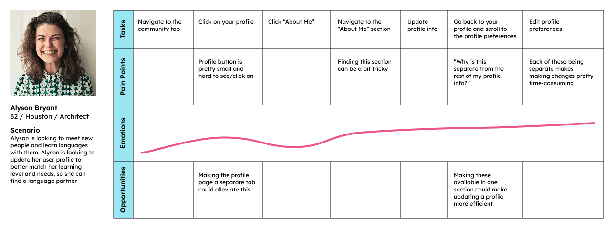
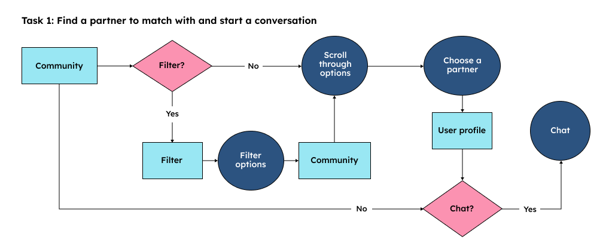
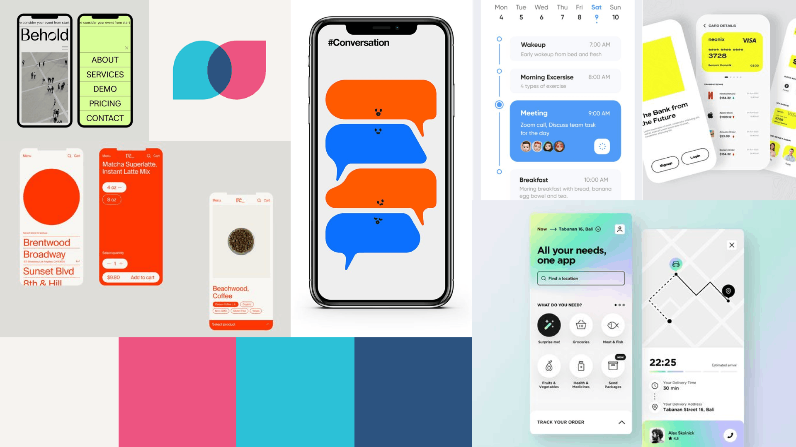
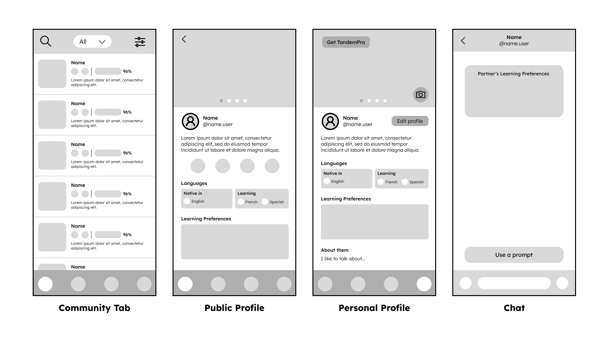
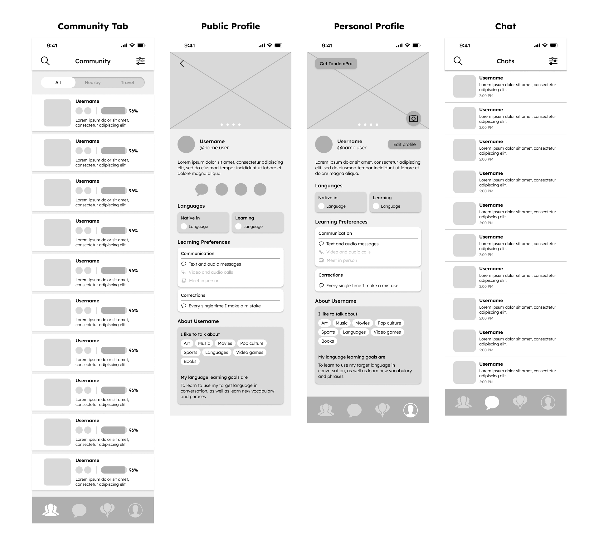
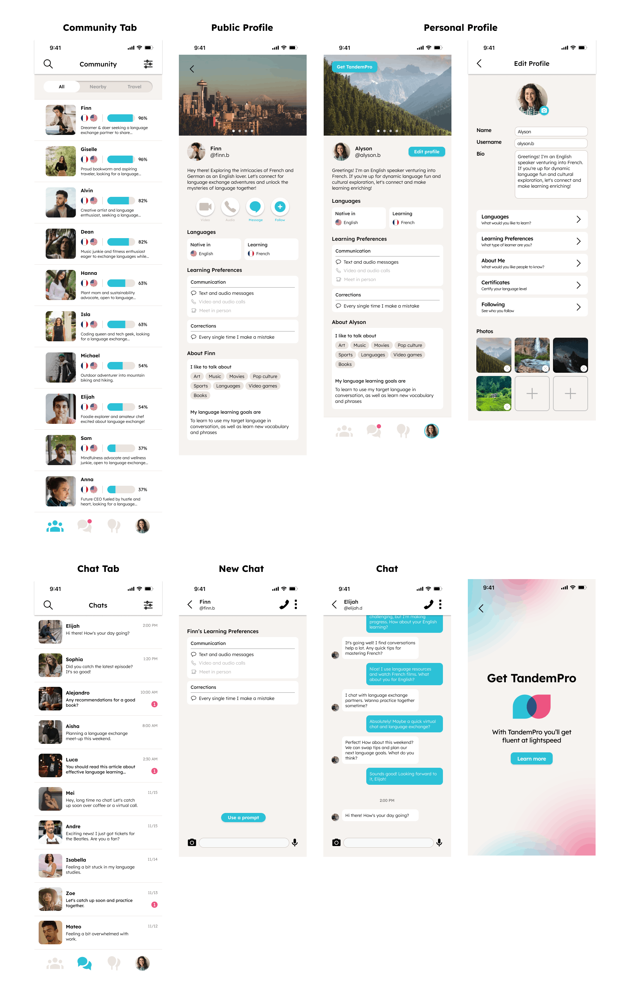

Tandem
A UX redesign of Tandem — a language exchange app — focused on reducing intimidation, improving navigation, and making meaningful connection feel accessible.
Tandem connects language learners with native speakers around the world. The app has a strong foundation — fast matching, real conversation, genuine community. But user research revealed a consistent pattern: the experience felt overwhelming, impersonal, and hard to navigate. This redesign addresses those friction points directly, building a version of Tandem that feels as welcoming as the community it's meant to foster.
View the full case study here

THE PROBLEM
Tandem's core value proposition is human connection — but the app's design was getting in the way of it. User interviews surfaced two consistent pain points: the anxiety of initiating conversation with a stranger, and a navigation structure that made finding a partner and managing a profile genuinely difficult.

RESEARCH
The process began with user surveys and interviews with existing Tandem users. The goal was to understand not just what people struggled with, but why — the emotional experience of using the app, not just the functional one. The findings shaped two clear design goals: reduce the intimidation around starting conversations, and simplify the navigation so users could focus on learning rather than figuring out the app.
Competitor benchmarking

App map

User journey

User flow

Goals
MOODBOARD
The visual direction was established early with a warm, approachable, and distinctly human feel. The references moved away from the sterile, utility-first aesthetic common to language learning apps and instead leaned toward something that felt more like a community platform.

WIREFRAMES
With research complete, wireframing began. The focus was on restructuring the navigation hierarchy; I focused on bringing partner discovery and profile management to the surface so users didn't have to hunt for core features. Every screen was evaluated against the research findings: does this reduce overwhelm? Does this feel welcoming?

LO-FI PROTOTYPE
The lo-fi prototype translated the wireframes into a testable flow. User testing at this stage focused on navigation. Could users find what they needed without guidance? The feedback directly informed the next iteration.

HI-FI PROTOTYPE
The hi-fi prototype applied the full visual system through color, typography, and component design across the refined structure. A second round of user testing confirmed that the updated navigation reduced the time users spent searching for core features, while the onboarding flow felt noticeably more welcoming than the original.
